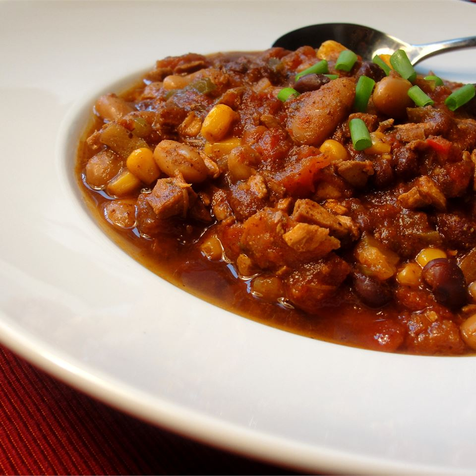

Chicken and Two Bean Chili

Description
An awesome change from the traditional beef chili! I made this for my husband for the first time and he went back for seconds!
Ingredients
- 2 chicken breasts, cut into chunks
- 1 tablespoon olive oil
- ⅓ red onion, chopped
- 3 cloves garlic, minced
- 1 (15 ounce) can black beans, drained
- 1 (14.5 ounce) can great Northern beans, drained
- 2 (14.5 ounce) cans diced tomatoes with green chile peppers
- 1 (14 ounce) can tomato sauce
- ½ cup chicken stock
- ½ cup brown sugar
- ½ cup frozen corn
- 3 tablespoons chili powder
- 3 tablespoons ground cumin
- 2 tablespoons dried cilantro
- Dash of salt
- 1 pinch cayenne pepper
- ½ green bell peppers, diced
- ½ red bell pepper, diced
- ½ yellow bell pepper, diced
Steps
- Fill a large pot with lightly-salted water and bring to a boil. Boil the chicken until no longer pink in the center and the juices run clear, 7 to 10 minutes. Drain the chicken and place in a slow cooker.
- Heat the olive oil in a skillet over medium heat. Brown the onion and garlic in the hot oil, 5 to 7 minutes; scrape into the slow cooker.
- Add the black beans, great Northern beans, tomatoes with green chiles, tomato sauce, chicken stock, brown sugar, corn, vinegar, chili powder, cumin, cilantro, salt, and cayenne pepper to the slow cooker. Cook on High until the beans are tender, 3 to 4 hours. Stir the diced green, red, and yellow bell peppers into the chili and cook another 20 minutes.
Main page